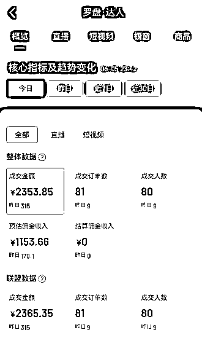
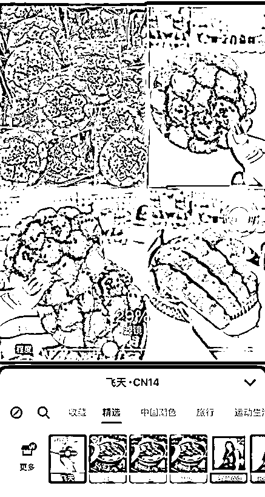

来源：https://ki9cyy7wy03.feishu.cn/docx/IxvMddmtUor51Dx7czKcMo1Nnsd
嗨喽，大家好，我是逍遥，很荣幸受到小霸王和西昂的邀请，为精华贴共读航海的圈友做一次项目的分享拓展。
今天能在这里和各位志同道合的朋友一起讨论交流，让我感觉很像是一场夜晚的篝火晚会，大家围坐在一起，
吹着晚风，聊聊自己的想法。
我在4月份发布了一篇帖子
大概讲述了我是如何一边上班，一边操作抖音短视频带货，完成月收入5W的。
如果你是正在上班，想一边上班一边做一份副业，那我现在可以说，抖音图文带货，一定是目前最适合的风口。
我当时在之前的文章末尾有提到，因为平台政策的影响，导致账号被封，以及后续的一些拓展想法。
而就在前几天，我其中一个账号已经解封了，我尝试用现在新的图文玩法，单号一天也成功出了一些单，单号一天也能赚1000多佣金。

那么我今天的分享，主要也就是针对图文带货的全流程拆解，我们就正式开始今天的分享了（这次分享有很多内容，涉及到之前我的文章里面的内容，阅读过之前的文章，本次分享效果最佳）
如果群里有正在做短视频带货的圈友可能有所了解，目前抖音的图文带货有流量倾斜，并且图文不能投流，大家都在同一起跑线，所以对很多新人，新号很友好，身边也有很多同行在五月份做图文带货，达到了月入几万甚至十万以上的收益。
相比较之前的视频混剪，以及真人出镜口播，图文的制作成本相对来说非常的低，我们一个视
频，只需要做好3-5张图片，就可以发带货视频了，不用去像以前花费很长时间剪辑一个视频。
之前的视频混剪，需要大家对剪辑需要一定的掌握度，而图文相对普通大众来说，省去了剪辑的
门槛，图文尤其对小红书了解的女性朋友会非常的友好。
因为图文带货目前都是用手机来发布，所以一个手机完全足够满足制作图片和发布图文带货，不用
在局限是否在电脑面前，上班摸鱼也能轻松做带货了。
我之前说过，一个项目有优点，也肯定有缺点。只谈优点不和大家谈缺点的项目，都是耍流氓。
对于有资金，懂投流玩法的大佬们来说，有一定的局限性，不能充钱变强了。
了解小红书的圈友，一定知道图文最重要的一定是首图，就像视频的黄金三秒，首图不吸引人，大概率
这条视频就被划走了。所以做图文需要一定的审美，不过对中老年书单号的赛道来说，这点不那么重要，
更应该注重的核心内容的醒目。
PS：文章后续图文的制作方法都是在找到同行参考图文后进行。至于如何选品以及找同行参考我在 这篇文章里面有详细介绍，不过今天我想补充几点
在我之前发布的文章里面有提到利用考古加找对标账号和对标商品的方法，但是有圈友和我提过，说考古加的出单数据并不是很准，的确第三方软件有个问题，就是出单的数据并不是非常的精准，行军打仗，探子情报不准可是大事。
所以我对此步骤进行了优化处理。
在电脑端的考古加上方，有个工具栏，里面有爆品探测功能。
我们设置好筛选范围，时间选择越近越好，然后类型选择自己的赛道。比如我自己是图书赛道，我就选择图书，然后时间选择今天。
然后假如这个品是我这个赛道的，我也正好想去带这个品。
我们直接点击作者的头像，找到作者的抖音ID，复制。
然后我们需要一个抖音小店的商家账号，现在抖音小店都是0押金入驻，只要有营业执照都是可以轻松入驻的，无论个体户还是企业都是可以的，实在没有营业执照的圈友，可以去某宝代办一个，大概几十块钱搞定。进入小店页面之后，我们选择找合作。
然后把我们刚才复制的作者抖音ID，粘贴在这个地方，就可以找到这个达人，我们进入达人主页，看视频数据。
这样我们就可以看到这个视频具体的GMV和播放量。官方的目前是数据最准的，我拿自己的账号测试过，数据也是基本无误的。我们就可以把两个软件结合起来，找到最精准的爆款视频，
在达人端的巨量百应中，我们找到创意中心，选择爆款视频，选择自己的赛道，然后和时间区间。也是可以找到目前正在爆的一些视频的。但是唯一一点是这个榜单只有视频，没有收录图文带货的信息，这点就不如考古加了。
我们有了最精准的一手情报之后，就需要去制作了。接下来我就要讲一下图片如果去重过审的方法。
这种类似于之前的短视频混剪，简单来说，就是拿别人的图来做图文，那么就会和短视频一样涉及到一个问题，
平台每天这么多人在发布图文，就容易遇到同质化限流。对于这种拿别人图做图文的话，有下面两种方法解决。
以这个为例，我的带货图文参考对标是这样的图。
那么我会先去小红书上找到类似的图片，导入美图秀秀
然后再找一个被咬开的梨子图片，在美图秀秀里面抠图处理，然后合成到我的背景底图上，这样一个按照对标的原创的图片就生成了。


图片合成完成以后，就是按照原图的感觉去加文字以及贴纸和滤镜等，贴纸比较随意去加就好了，然后排版往边角放一下就OK了，这样一张单图的去重就完成了。
首先打开美图秀秀，点拼图。我一般都是用四张来拼图，这种拼图主要用来做一些零食，中老年的话就是汤包之类的比较多。然后导入四张图片之后点高级编辑，选中无缝模式，然后融合度，就可以拉大缩小所有图片，大家可以按照图片的哪种排版好看替换图片的位置。

调整好图片大小后位置后，我们后续要做的也是添加滤镜和贴纸还有文字，这样一张拼图的图文就完成了。


相比较于单图的话，这种拼图的图片，同质化的概率会更低。
以上两种去重的方法完成之后，我们最后用到"wink"这个软件，来把我们的图片画质变得更清晰。

这种就是需要购买一个俯拍灯，然后最好是苹果12以上手机，就可以完成，找商家邮寄样品之后，直接找对标爆款素材之后，按照对标的来实拍就行了，为了防止同质化，最好在画面中加一些元素，比如道具花，比如一些其他的道具之类的，实在没有道具的，就把自己手放进去，然后加一些贴纸去重效果最佳。实拍的话是最省时省力的，也是原创度最高的图文，但是缺点是需要商家寄过来，可能就会错过商品爆的几天周期，所以建议账号混剪实拍结合。
在BGM的处理上，一般都是收藏对标的音频，然后我们发布图文的时候选择收藏的音乐即可。
说个题外事，昨天我和朋友打麻将，我朋友可以不翻开牌，拿手指摸两下，就能知道这个牌是什么，我问他怎么摸出来的，当时他说了一句“无他，唯手熟尔”。我当时心里想“被他装到了。”
为什么我要讲这么一个故事呢？因为互联网也需要“唯手熟尔”，就是俗称的“网感”。
做互联网项目久了，我发现，有些人，他对爆款的觉察力很强，能够找到潜在的爆款，往往这批人也是在带货这行赚的最多的一批。所以在前期经验不足的时候，我们多去观察和抄同行积累经验，多去认识和链接一些同行，多打入一些同行圈子，提高我们对于趋势的一个觉察力，其实就是“这样越早的发现“风吹草动”，我们也就越早能吃到螃蟹。
今年加入生财，很有幸第一篇发文就被“亦仁”加了精华，也通过生财圈子认识了很多志同道合的好友，现在也是很感谢生财能提供一个平台，让我的发声，能被更多人看到。然后非常幸运的是加入了@梁靠谱 “谱爹”的战队，跟着“谱爹”学习到了很多认知层面的知识。
在生财，我相信人人都能生财有术，只有发声才会有可能“发生”。
我是逍遥，一个不喜欢被约束的人。很感谢你能看到这里，如果觉得有用，不妨点个赞，据说点赞也会容易被看见哦。